SunUI 移植試作 · 2026-11-23
同一個元件：原版、Vue、iPhone
三個元件各用一份「轉接規則加原始碼」的 Prompt，交給看不到原專案的全新 agent 生成。下面全部是第一輪生成的結果，沒有任何人工修改。左欄是 SunUI 原版（React），中欄 Vue，右欄 SwiftUI 跑在 iPhone 17 Pro 模擬器。原版用的是網站主題（藍色專色），移植版用預設中性主題，所以強調色不同是預期的。
| 元件 | Vue | SwiftUI |
|---|---|---|
| confirm-button | 第一輪通過 | 第一輪通過 |
| range-slider | 第一輪通過 | 第一輪通過 |
| scratch-card（Pro，canvas） | 第一輪通過 | 第一輪通過 |
confirm-button
按一下變成待確認（同一顆按鈕變寬變色，下方出現提示），2.5 秒內再按一下才執行。
待確認
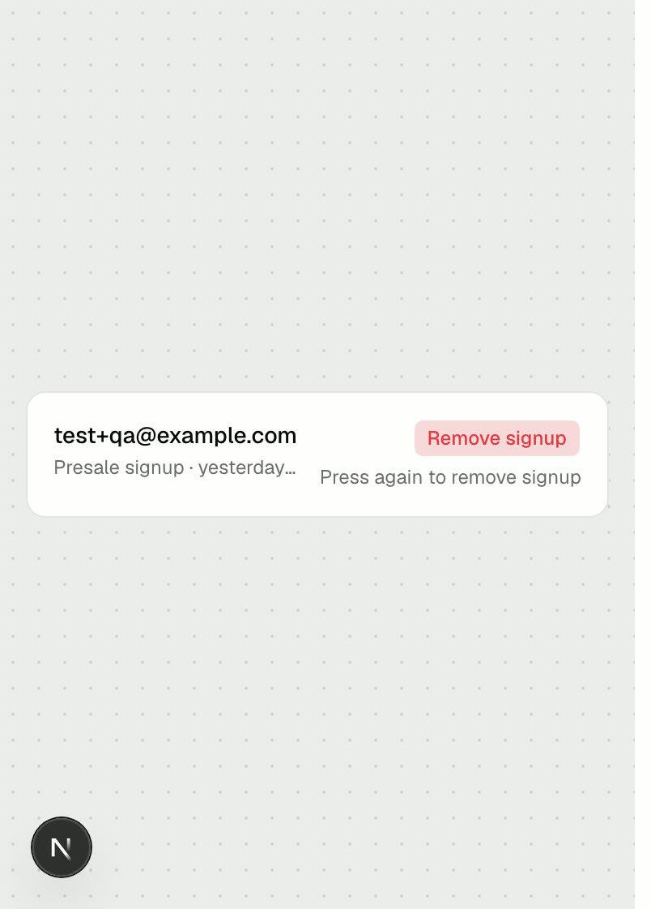
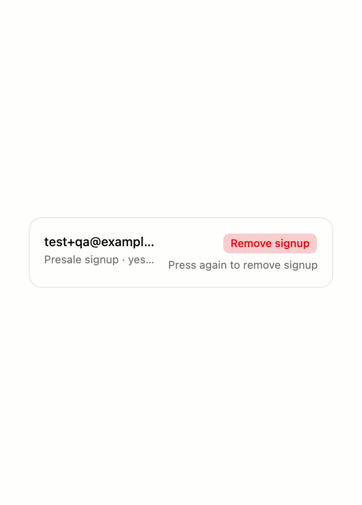
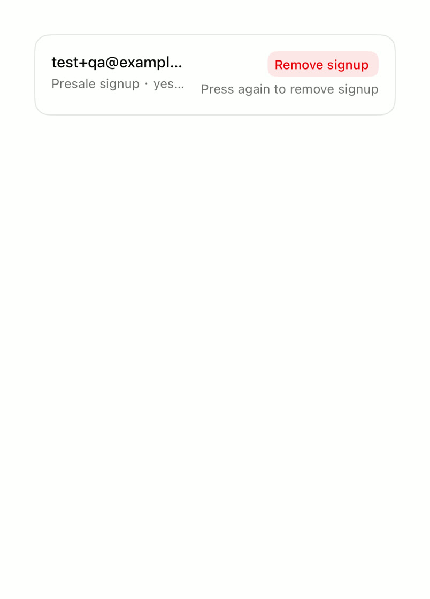
完成
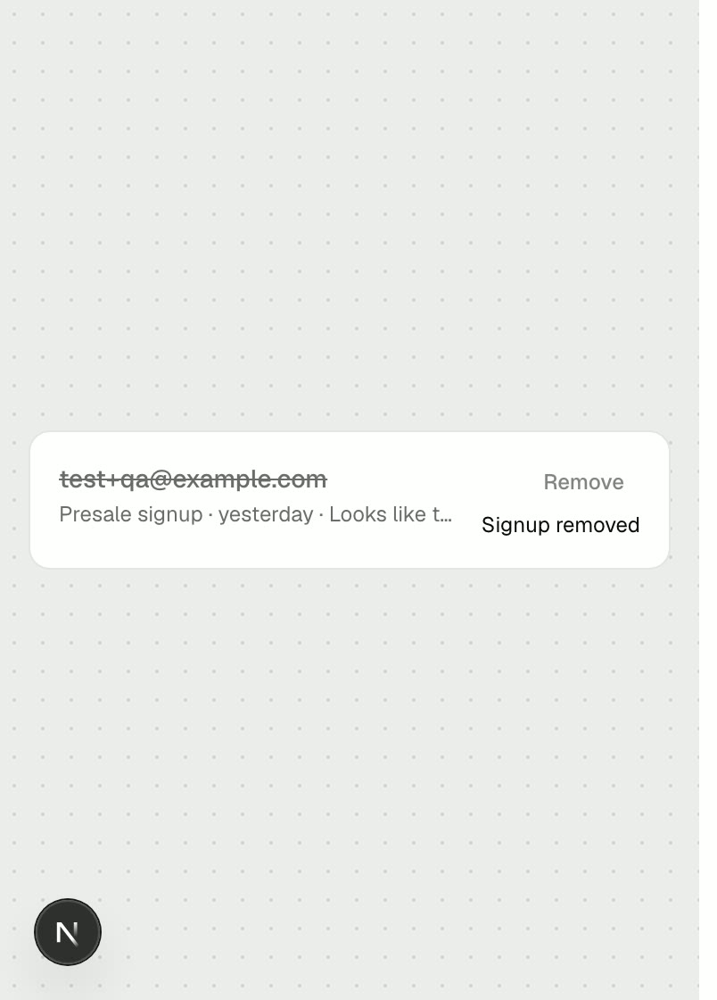
量到的數字（原版對 Vue，無頭 Chrome 逐格取樣）
| 項目 | 原版 | Vue |
|---|---|---|
| 按鈕寬度：起點、彈簧最高點、落定 | 63.4 → 105.4 → 104.2 px | 63.8 → 107.2 → 106.0 px |
| 彈簧過衝 | 1.2 px | 1.2 px |
| 待確認逾時 | 2595 ms | 2624 ms |
| Escape 取消、執行中停用、完成訊息、1.8 秒後清除 | 都有 | 都有 |
iPhone 上的逐格畫面（錄影抽出有變化的影格）
影片是整段操作（三個元件）。右圖前兩列是變寬和文字上下替換的過程。看得到的小差異：完成訊息的顏色比文字早一格切換。
range-slider
拖曳、點軌道跳到最近的把手、步進吸附、最小間距。
靜止
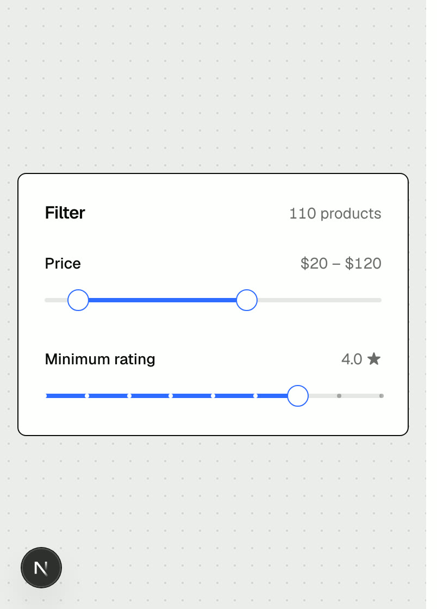
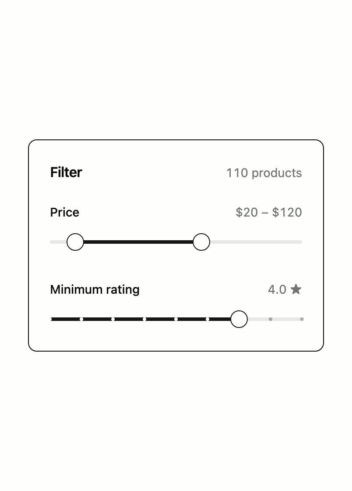
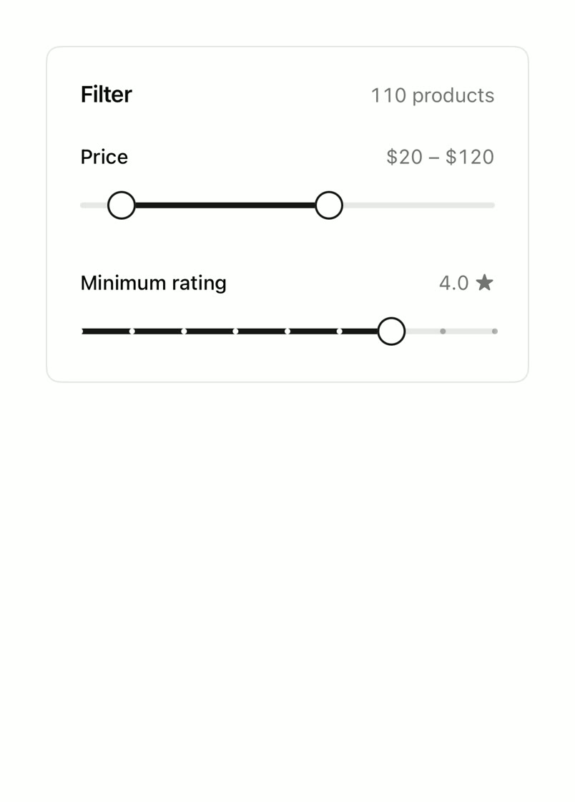
拖曳中 / 操作後
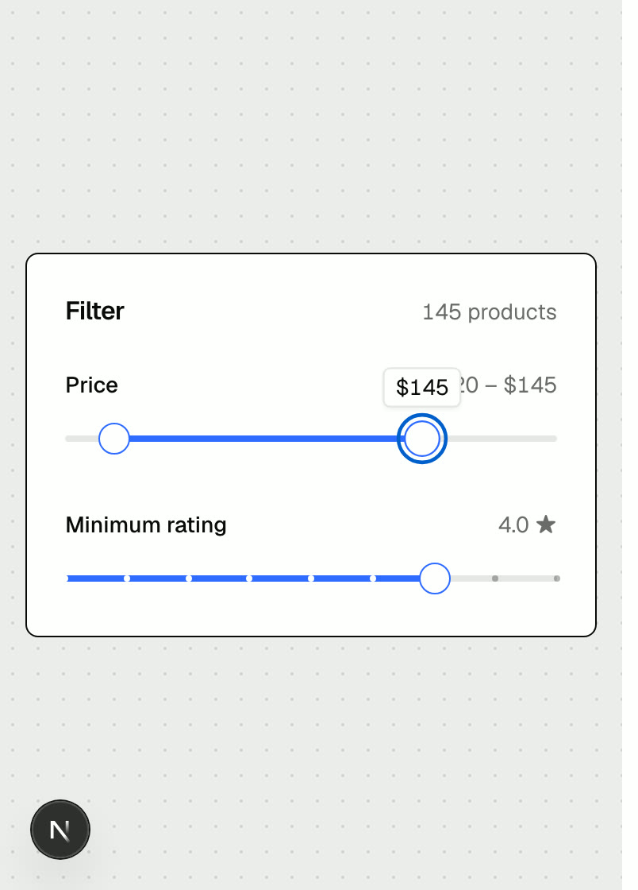
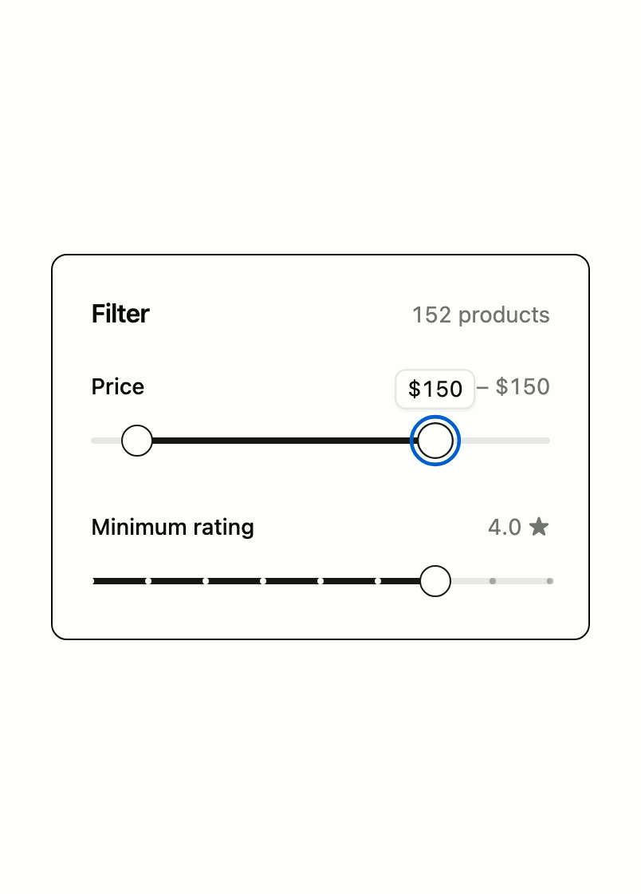
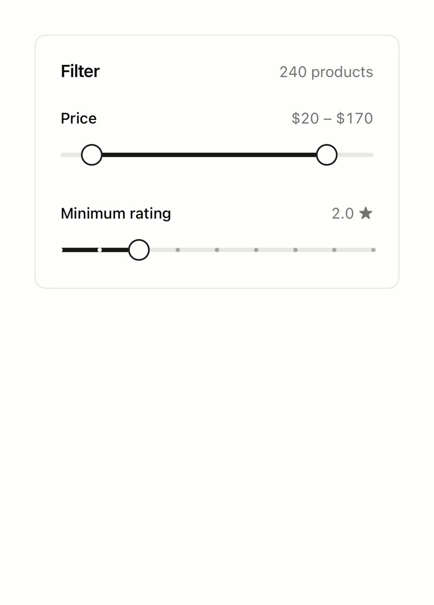
iPhone 版放開手指後氣泡會收起（觸控沒有「失焦」），這是移植時 agent 自己做的合理調整，已寫回轉接規則。
scratch-card（Pro）
canvas 刮除，刮超過 55% 自動全開，中獎時結果圓片落定一次。左欄的原版是公開預覽版（另一份實作，樣式略有不同）；移植依據的是 Pro 原始碼。
刮到一半
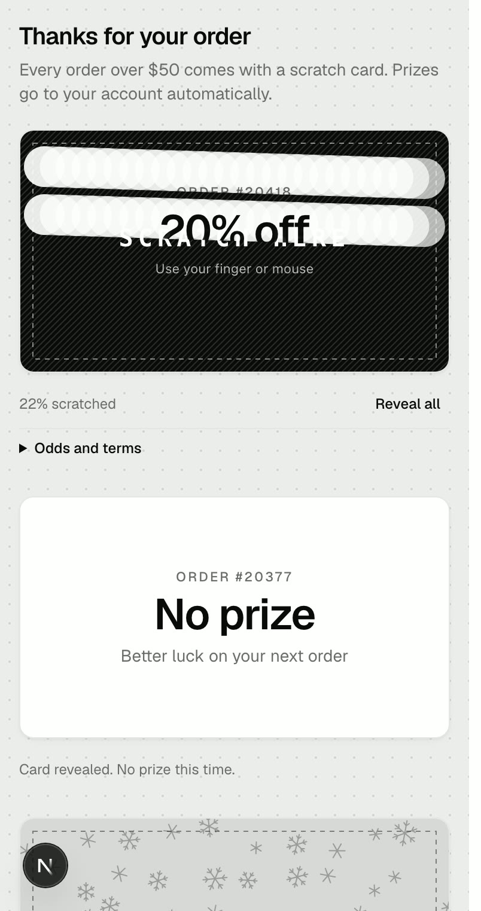
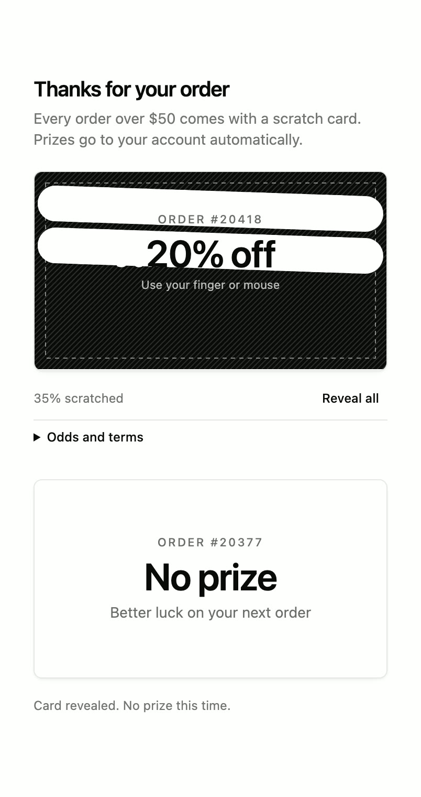
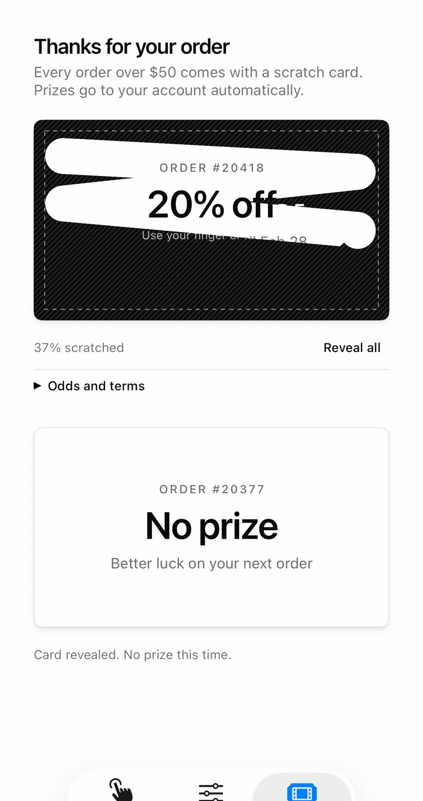
全開
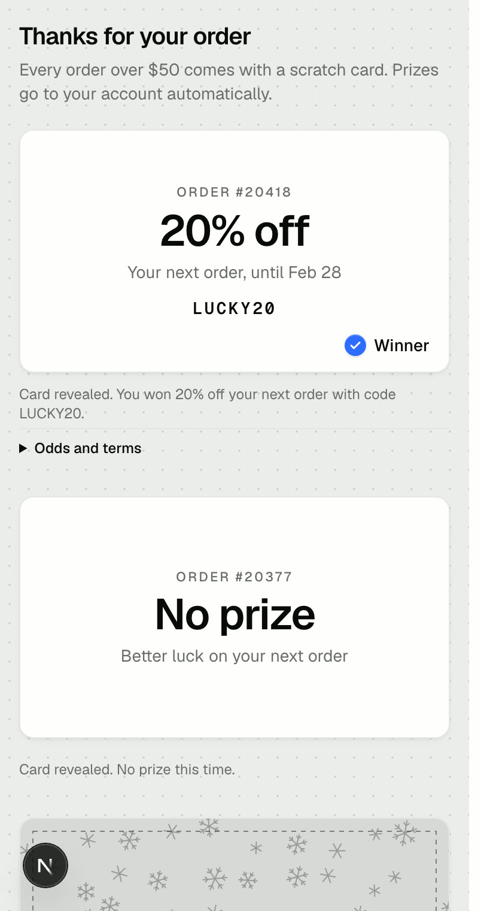
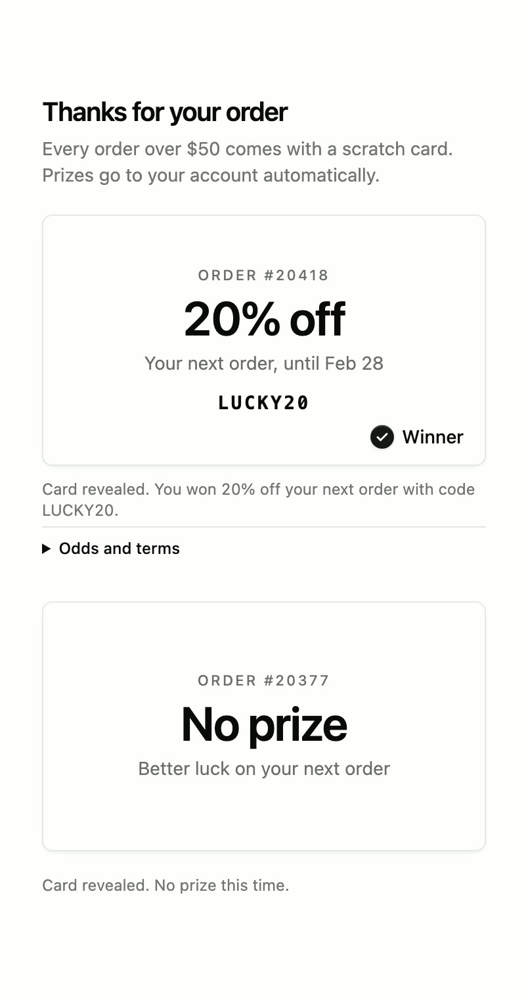
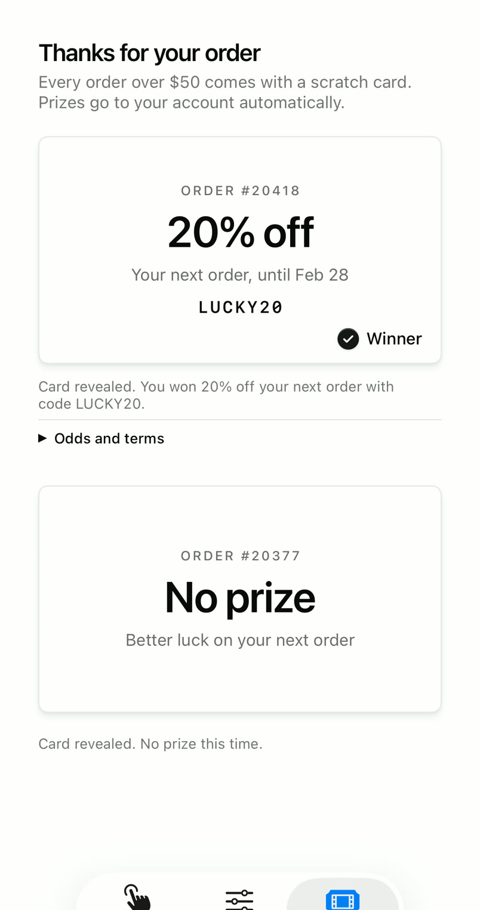